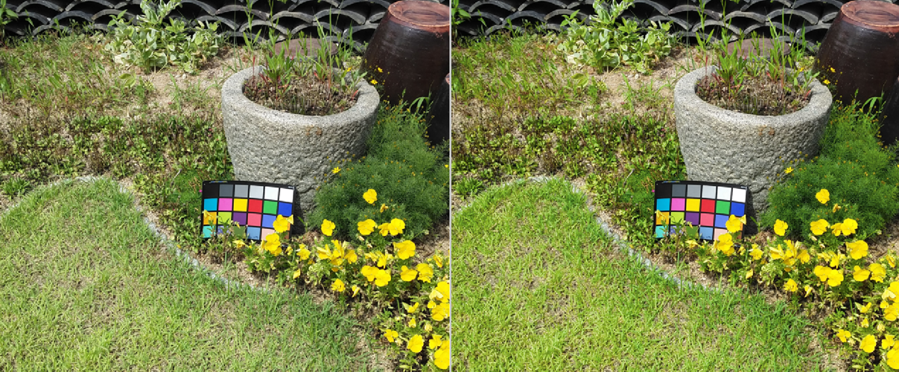
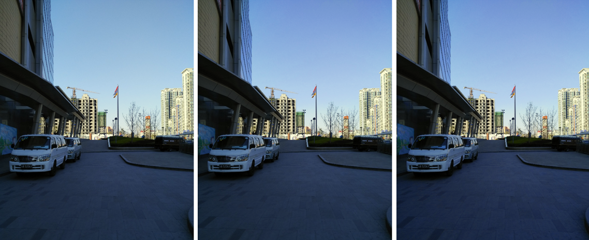

| Spectra 2xx ISP Tuning / IPE tuning | |
2D LUT tuning helps render colors accurately and pass color fidelity tests. It can also adjust specific colors, such as blue skies or green grass, without affecting other colors. The design allows easy enhancement of most colors. 2D LUT helps to control color dynamically from point-to-point for hue and saturation. All hue and saturation values can be changed, though only some hue and saturation values can change without affecting other colors. 2D LUT uses hue, saturation, and luminance to enhance colors, where hue and saturation can be adjusted with the lightness (L) value.
The Y offset adjusts brightness and is calculated and applied to the final output. A value of zero is recommended to maintain original colors and brightness.
Y offset = Yin (R, G, B) - Yout (R', G', B')
An image with a sky or grass background is the best test example to use for 2D LUT tuning. In low-light and indoor conditions, ensure chroma noise is not added.
2D LUT replaces MCE and SCE.
The following example has a +20% saturation for green colors.

Using hue and saturation can adjust blue sky images. The following example has a
hue of +10 degrees and +15% saturation.
By adjusting specific L values, images can be adjusted to allow only changes to
blue sky, or changes to all blue colors.

Coordination with other modules
| Module | Description |
|---|---|
| AEC (luma target)* | Tune to match target phone. |
| AWB* | Tune reasonably well. |
| Chroma suppression* | It is recommended to disable this module. |
| Gamma and CCM | Perform global tone and global color assessment. |
| 2D LUT |
|
| *Perform prior to color tuning. | |